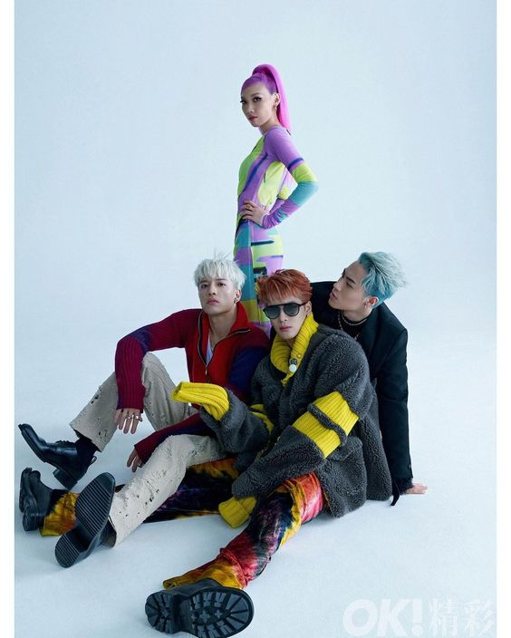

PANTHEPACK is a Chinese hip-hop group with 4 members that consists of Jackson Wang, Karencici, J.Sheon and ICE. The group is under Team Wang. Which is from Jackson Wang. PANTHEPACK debuted on Octber 9th, 2021. The fandom name is 'Mad Pandas'.

MEMBERS
JACKSON WANG
stage name: Jackson Wang
birth name: Wang Jia Er/ Wang Ka Yee
birthday: March 28th, 1994
zodiac sign: Aries
height: 174 cm
nationality: Chinese
bornplace: Hong Kong, China
J.SHEON
stage name: J.Sheon
birth name: Chuang Hsun
birthday: December 24th, 1985
zodiac sign: Capricorn
height: 181 cm
nationality: Taiwanese-American
bornplace: Taipei, Taiwan, China
KARENCICI
stage name: Karencici
birth name: Lin Kai Lun
english name: Keran Lin
birthday: January 12th, 1998
zodiac sign: Capricorn
height: 168 cm
nationality: Chinese-American
bornplace: California, USA
ICE
stage name: ICE
birth name: Yang Chang Qing
birthday: May 14th, 1996
zodiac sign: Taurus
height: 174 cm
nationality: Chinese
bornplace: Sichuan, China